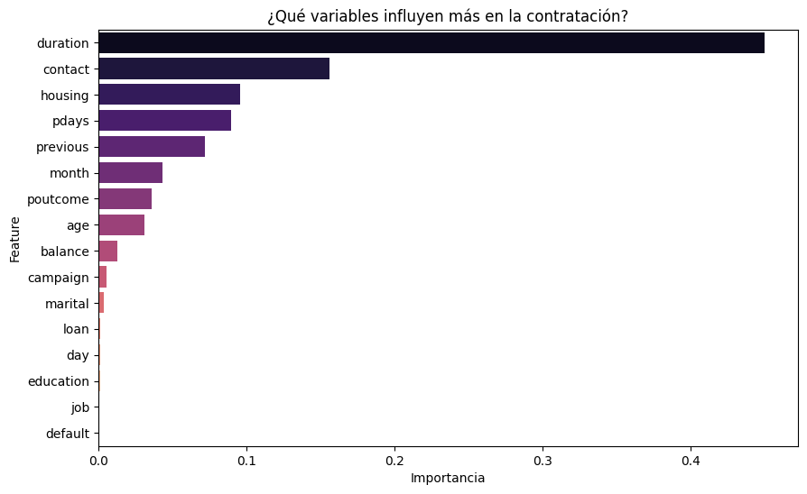

import pandas as pd
from sklearn.preprocessing import MinMaxScaler
from sklearn.preprocessing import LabelEncoder
from sklearn.model_selection import train_test_split
from sklearn.tree import DecisionTreeClassifier
from sklearn.ensemble import RandomForestClassifier
from sklearn.metrics import classification_report, confusion_matrix
import matplotlib.pyplot as plt
import seaborn as snsProyecto de marketing bancario
Objetivo: de predecir si un cliente contratará un servicio
Importamos todas las librerías que vamos a necesitar:
Cargar los datos:
- Indicamos que los datos vienen separados por ; (no por , como suele ser habitual)
df = pd.read_csv("bank-full.csv", sep=";")Visualizacion en consola de una muestra de los datos:
#print("dataframe_head:\n", df.head())
#print("\n")
df.head()| age | job | marital | education | default | balance | housing | loan | contact | day | month | duration | campaign | pdays | previous | poutcome | y | |
|---|---|---|---|---|---|---|---|---|---|---|---|---|---|---|---|---|---|
| 0 | 58 | management | married | tertiary | no | 2143 | yes | no | unknown | 5 | may | 261 | 1 | -1 | 0 | unknown | no |
| 1 | 44 | technician | single | secondary | no | 29 | yes | no | unknown | 5 | may | 151 | 1 | -1 | 0 | unknown | no |
| 2 | 33 | entrepreneur | married | secondary | no | 2 | yes | yes | unknown | 5 | may | 76 | 1 | -1 | 0 | unknown | no |
| 3 | 47 | blue-collar | married | unknown | no | 1506 | yes | no | unknown | 5 | may | 92 | 1 | -1 | 0 | unknown | no |
| 4 | 33 | unknown | single | unknown | no | 1 | no | no | unknown | 5 | may | 198 | 1 | -1 | 0 | unknown | no |
Mostramos los tipos de datos de las features del df y las dimensiones (filas x columnas)
print("numero de filas: ", df.shape[0]) # tb vale len(df)
print("numero de columnas: ", df.shape[1])
print("\n")
print("df_types:\n", df.dtypes)
print("\n")numero de filas: 45211
numero de columnas: 17
df_types:
age int64
job object
marital object
education object
default object
balance int64
housing object
loan object
contact object
day int64
month object
duration int64
campaign int64
pdays int64
previous int64
poutcome object
y object
dtype: object
Mostramos las columnas (features) incluída la columna objetivo ‘y’:
print("df_columns:\n ", df.columns)
print("\n")df_columns:
Index(['age', 'job', 'marital', 'education', 'default', 'balance', 'housing',
'loan', 'contact', 'day', 'month', 'duration', 'campaign', 'pdays',
'previous', 'poutcome', 'y'],
dtype='object')
Mostramos info del dataframe:
df.info()<class 'pandas.core.frame.DataFrame'>
RangeIndex: 45211 entries, 0 to 45210
Data columns (total 17 columns):
# Column Non-Null Count Dtype
--- ------ -------------- -----
0 age 45211 non-null int64
1 job 45211 non-null object
2 marital 45211 non-null object
3 education 45211 non-null object
4 default 45211 non-null object
5 balance 45211 non-null int64
6 housing 45211 non-null object
7 loan 45211 non-null object
8 contact 45211 non-null object
9 day 45211 non-null int64
10 month 45211 non-null object
11 duration 45211 non-null int64
12 campaign 45211 non-null int64
13 pdays 45211 non-null int64
14 previous 45211 non-null int64
15 poutcome 45211 non-null object
16 y 45211 non-null object
dtypes: int64(7), object(10)
memory usage: 5.9+ MBValores generales de dataframe (describe):
df.describe()| age | balance | day | duration | campaign | pdays | previous | |
|---|---|---|---|---|---|---|---|
| count | 45211.000000 | 45211.000000 | 45211.000000 | 45211.000000 | 45211.000000 | 45211.000000 | 45211.000000 |
| mean | 40.936210 | 1362.272058 | 15.806419 | 258.163080 | 2.763841 | 40.197828 | 0.580323 |
| std | 10.618762 | 3044.765829 | 8.322476 | 257.527812 | 3.098021 | 100.128746 | 2.303441 |
| min | 18.000000 | -8019.000000 | 1.000000 | 0.000000 | 1.000000 | -1.000000 | 0.000000 |
| 25% | 33.000000 | 72.000000 | 8.000000 | 103.000000 | 1.000000 | -1.000000 | 0.000000 |
| 50% | 39.000000 | 448.000000 | 16.000000 | 180.000000 | 2.000000 | -1.000000 | 0.000000 |
| 75% | 48.000000 | 1428.000000 | 21.000000 | 319.000000 | 3.000000 | -1.000000 | 0.000000 |
| max | 95.000000 | 102127.000000 | 31.000000 | 4918.000000 | 63.000000 | 871.000000 | 275.000000 |
Checkeamos si hay datos corruptos (vacíos / NaN)…
print("Algun valor NaN o vacio? ", df.isnull().values.any())
print("Suma de valores NaN o vacio? ", df.isnull().values.sum())
print("\n")Algun valor NaN o vacio? False
Suma de valores NaN o vacio? 0
Creamos varias listas:
- features (lista con todas las features)
- num_features (lista con las features de tipo numérico)
- text_features (lista con las features de tipo NO numérico text/str/object…)
features = [feature for feature in df.columns]
print("numero de features: ", len(features))
print(features)
print("\n")
numeric_features = df.select_dtypes(include=['number']).columns.to_list()
print("Numero de NUMERIC features: ", len(numeric_features))
print(numeric_features)
print("\n")
text_features = df.select_dtypes(include=['object', 'string']).columns.to_list()
print("Numero de OBJECT/STRING features: ", len(text_features))
print(text_features)
print("\n")numero de features: 17
['age', 'job', 'marital', 'education', 'default', 'balance', 'housing', 'loan', 'contact', 'day', 'month', 'duration', 'campaign', 'pdays', 'previous', 'poutcome', 'y']
Numero de NUMERIC features: 7
['age', 'balance', 'day', 'duration', 'campaign', 'pdays', 'previous']
Numero de OBJECT/STRING features: 10
['job', 'marital', 'education', 'default', 'housing', 'loan', 'contact', 'month', 'poutcome', 'y']
Aplicamos MinMaxScaler SOLO a las features numéricas:
mmscaler = MinMaxScaler()
df[numeric_features] = mmscaler.fit_transform(df[numeric_features])
# Checkeamos una muestra pequeña de datos (para ver si esta correcto el mmscaler)
df.head()| age | job | marital | education | default | balance | housing | loan | contact | day | month | duration | campaign | pdays | previous | poutcome | y | |
|---|---|---|---|---|---|---|---|---|---|---|---|---|---|---|---|---|---|
| 0 | 0.519481 | management | married | tertiary | no | 0.092259 | yes | no | unknown | 0.133333 | may | 0.053070 | 0.0 | 0.0 | 0.0 | unknown | no |
| 1 | 0.337662 | technician | single | secondary | no | 0.073067 | yes | no | unknown | 0.133333 | may | 0.030704 | 0.0 | 0.0 | 0.0 | unknown | no |
| 2 | 0.194805 | entrepreneur | married | secondary | no | 0.072822 | yes | yes | unknown | 0.133333 | may | 0.015453 | 0.0 | 0.0 | 0.0 | unknown | no |
| 3 | 0.376623 | blue-collar | married | unknown | no | 0.086476 | yes | no | unknown | 0.133333 | may | 0.018707 | 0.0 | 0.0 | 0.0 | unknown | no |
| 4 | 0.194805 | unknown | single | unknown | no | 0.072812 | no | no | unknown | 0.133333 | may | 0.040260 | 0.0 | 0.0 | 0.0 | unknown | no |
Opcional:
- Codificamos los valores que NO sean numeros y los guardamos en un dict (encoders[]):
encoders = {}
for col in text_features:
"""Codificamos los valores que NO sean numeros y los guardamos en un dict (encoders[])"""
label_encoder = LabelEncoder()
#clientes[col] = label_encoder.fit_transform(clientes[col].values.ravel())
df[col] = label_encoder.fit_transform(df[col])
encoders[col] = label_encoder
# --------------------------------------------------------------------------------------------
# Visualizamos en consola el dict creado (viendo todos los encoders creados)
# --------------------------------------------------------------------------------------------
print("Diccionario de Correspondencias (LabelEncoder):\n")
for columna, le in encoders.items():
"""Iteramos el diccionario del LabelEncoder"""
print(f"\nColumna: {columna}")
# le.classes_ contiene las palabras originales en el orden 0, 1, 2...
for indice, nombre in enumerate(le.classes_):
print(f" {indice} -> {nombre}")
print("\n")Diccionario de Correspondencias (LabelEncoder):
Columna: job
0 -> admin.
1 -> blue-collar
2 -> entrepreneur
3 -> housemaid
4 -> management
5 -> retired
6 -> self-employed
7 -> services
8 -> student
9 -> technician
10 -> unemployed
11 -> unknown
Columna: marital
0 -> divorced
1 -> married
2 -> single
Columna: education
0 -> primary
1 -> secondary
2 -> tertiary
3 -> unknown
Columna: default
0 -> no
1 -> yes
Columna: housing
0 -> no
1 -> yes
Columna: loan
0 -> no
1 -> yes
Columna: contact
0 -> cellular
1 -> telephone
2 -> unknown
Columna: month
0 -> apr
1 -> aug
2 -> dec
3 -> feb
4 -> jan
5 -> jul
6 -> jun
7 -> mar
8 -> may
9 -> nov
10 -> oct
11 -> sep
Columna: poutcome
0 -> failure
1 -> other
2 -> success
3 -> unknown
Columna: y
0 -> no
1 -> yes
1. Corte Vertical (separamos la variable objetivo/target almacenándola en ‘y’):
Separación de variables (corte vertical) (X= inputs, y= target) ‘y’= nombre la columna objetivo (target)
X = df.drop('y', axis=1) # axis=1 indicamos que es columna (0 seria fila)
y = df['y'] # 2do corte (solo una columna)
y.head()
#X.head()| y | |
|---|---|
| 0 | 0 |
| 1 | 0 |
| 2 | 0 |
| 3 | 0 |
| 4 | 0 |
2. División entre datos de Train 80% y Test 20% (corte horizontal):
- (El método también nos hace el shuffle):
- El param test_size=0.2 es el que determina que el 20% sea para test
- Usamos random_state=22 como pide el PDF para que siempre de los mismos resultados
X_train, X_test, y_train, y_test = train_test_split(X, y, test_size=0.20, random_state=22)3. Instanciamos un Decision Tree Classifier con parámetros:
- param 1: Aplicamos el parámetro clave: class_weight=“balanced” para manejar el desbalanceo
- param 2: random_state=22 (para que el aleatorio sea siempre igual en cada ejecucion)
decisionTree_model = DecisionTreeClassifier(class_weight="balanced", random_state=22)4. Instanciamos un RandomForestClassifier con parámetros:
- param 1: n_estimators entre 100-200 (suficientes para un buen resultado)
- param 2 : entre 0.2-0.5
- param 3: Aplicamos balanced para manejar el desbalanceo
- param 4: Random_state 22 para que NO cambie el aleatorio en cada ejecucion
randomForest_model = RandomForestClassifier(n_estimators=150, min_samples_split=0.3, class_weight="balanced", random_state=22)5. Creamos una lista con lo necesario para cada modelo:
- (vamos a iterar los modelos en un bucle, en este caso sólo son 2):
models = [
(decisionTree_model, "--- METRICAS DECISION-TREE ---", "--- MATRIZ DE CONFUSION (DECISION-TREE) ---"),
(randomForest_model, "--- METRICAS RANDOM-FOREST ---", "--- MATRIZ DE CONFUSION (RANDOM-FOREST) ---")
]
print(f"Número de modelos: {len(models)}")Número de modelos: 26. Creamos unas listas vacias para almacenar predicciones, reportes, etc.
- predictions: almacena los resultados de los métodos predict
- reportes: almacena los resultados de los reportes
- reportes_dict: lo mismo que el anterior, pero genera un dict
- df_reportes_dict: crea un nuevo df con el dict anterior
- reportes_conf_matrix: almacena los resultados de los confusion_matrix
predictions = []
reportes = []
reportes_dict = []
df_reportes_dict = []
reportes_conf_matrix = []7. Iteramos cada modelo con bucle for:
for i in range(len(models)):
# Entrenamos el model correspondiente a la iteración:
models[i][0].fit(X_train, y_train)
# Aplicamos el método predict:
predictions.append(models[i][0].predict(X_test))
# Almacenamos e imprimimos las métricas:
print("=" * 55)
print(models[i][1])
print("=" * 55)
reportes.append(classification_report(y_test, predictions[i]))
print(reportes[i])
# (Opcional) Lo almacenamos tb en un diccionario y creamos otro df:
reportes_dict.append(classification_report(y_test, predictions[i], output_dict=True))
df_reportes_dict.append(pd.DataFrame(reportes_dict[i]).transpose())
#print(df_reportes_dict[i])
# Almacenamos e imprimimos el reporte confusion-matrix:
print(models[i][2])
reportes_conf_matrix.append(confusion_matrix(y_test, predictions[i]))
print(reportes_conf_matrix[i])
print("\n")=======================================================
--- METRICAS DECISION-TREE ---
=======================================================
precision recall f1-score support
0 0.93 0.93 0.93 7971
1 0.46 0.46 0.46 1072
accuracy 0.87 9043
macro avg 0.69 0.69 0.69 9043
weighted avg 0.87 0.87 0.87 9043
--- MATRIZ DE CONFUSION (DECISION-TREE) ---
[[7384 587]
[ 581 491]]
=======================================================
--- METRICAS RANDOM-FOREST ---
=======================================================
precision recall f1-score support
0 0.97 0.69 0.81 7971
1 0.27 0.82 0.40 1072
accuracy 0.71 9043
macro avg 0.62 0.76 0.61 9043
weighted avg 0.88 0.71 0.76 9043
--- MATRIZ DE CONFUSION (RANDOM-FOREST) ---
[[5537 2434]
[ 191 881]]
Conclusion Decision-Tree:
Aún con el parametro class_weight=balanced al modelo le cuesta distinguir patrones de contratación. (con un f1-score de un 46%)
Sólo tiene buen resultado en patrones de no contratación al tener muchos mas ejemplos para aprender de ellos. (Aquí el f1-score llega hasta el 93%)
En cuanto a la matriz de confusión sólo consiguió encontrar a 491 dejando “escapar” a 581
Conclusion Random-Forest:
Aunque el Decision Tree tiene mejor Accuracy y F1-Score, para una campaña de marketing el modelo más útil es el Random Forest, ya que su Recall del 82% nos asegura que el banco captará a la gran mayoría de clientes interesados, aunque a costa de hacer más llamadas a clientes que finalmente no contratarán.
En este modelo la matriz de confusión muestra que logró captar a 881 dejando “escapar” sólo a 191, mejorando muchísimo al otro modelo. Parece que este modelo es mejor para este ejercicio.
Gráfico de barras mostrando las features más influyentes (Random forest)
- Creamos un pequeño dataframe
importancias = randomForest_model.feature_importances_
nombres_features = X.columns
# Creamos un pequeño DF para graficarlo fácilmente
df_importancia = pd.DataFrame({'Feature': nombres_features, 'Importancia': importancias})
df_importancia = df_importancia.sort_values(by='Importancia', ascending=False)- Y creamos el gráfico de barras:
plt.figure(figsize=(10, 6))
sns.barplot(x='Importancia', y='Feature', data=df_importancia, palette='magma')
plt.title('¿Qué variables influyen más en la contratación?')
plt.show()/tmp/ipykernel_949/1618845787.py:2: FutureWarning:
Passing `palette` without assigning `hue` is deprecated and will be removed in v0.14.0. Assign the `y` variable to `hue` and set `legend=False` for the same effect.
sns.barplot(x='Importancia', y='Feature', data=df_importancia, palette='magma')